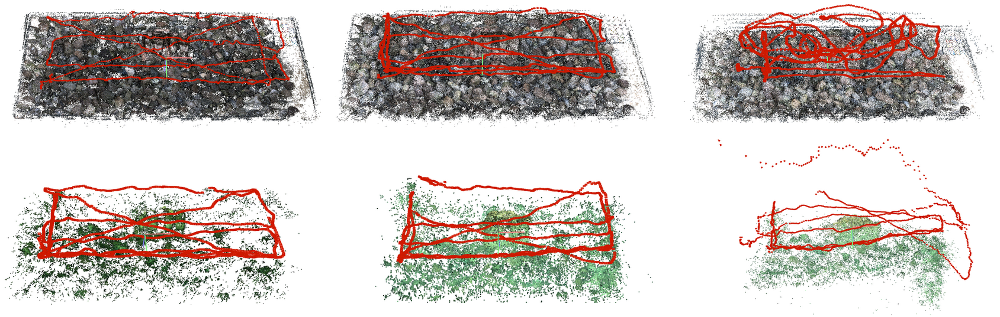

A Benchmark and Cross-Domain Strategy for 3D Reconstruction Across Air and Underwater Domains Under Varying Illumination
BALTIC is a controlled benchmark for evaluating 3D reconstruction methods across air and underwater environments under varying illumination. It enables systematic analysis of scattering, absorption, and domain shifts.
git clone https://github.com/yourname/baltic.git
cd baltic
pip install -r requirements.txt
python demo.py
Total size: XXX GB
BALTIC/
├── E1/
│ ├── images/
│ ├── poses.txt
│ ├── intrinsics.json
│ └── depth/
Mini dataset (recommended first):
Download (~5GB)Full dataset:
bash download_full.sh
Note: Full dataset may require >XXX GB storage.
from baltic import load_sequence
data = load_sequence("E1")
print(data.images.shape)
Includes loaders, calibration parsing, and scripts to reproduce results.

Representative COLMAP reconstructions across air and underwater datasets. In-air sequences remain dense and globally consistent, while underwater reconstructions become sparse and fragmented due to scattering and absorption effects.
All experiments can be reproduced using the provided scripts and dataset.
@article{baltic2026,
title={BALTIC: A Benchmark for 3D Reconstruction Across Air and Underwater Domains},
author={Grimaldi et al.},
journal={IJRR},
year={2026}
}
Michele Grimaldi – michelegrmld@gmail.com